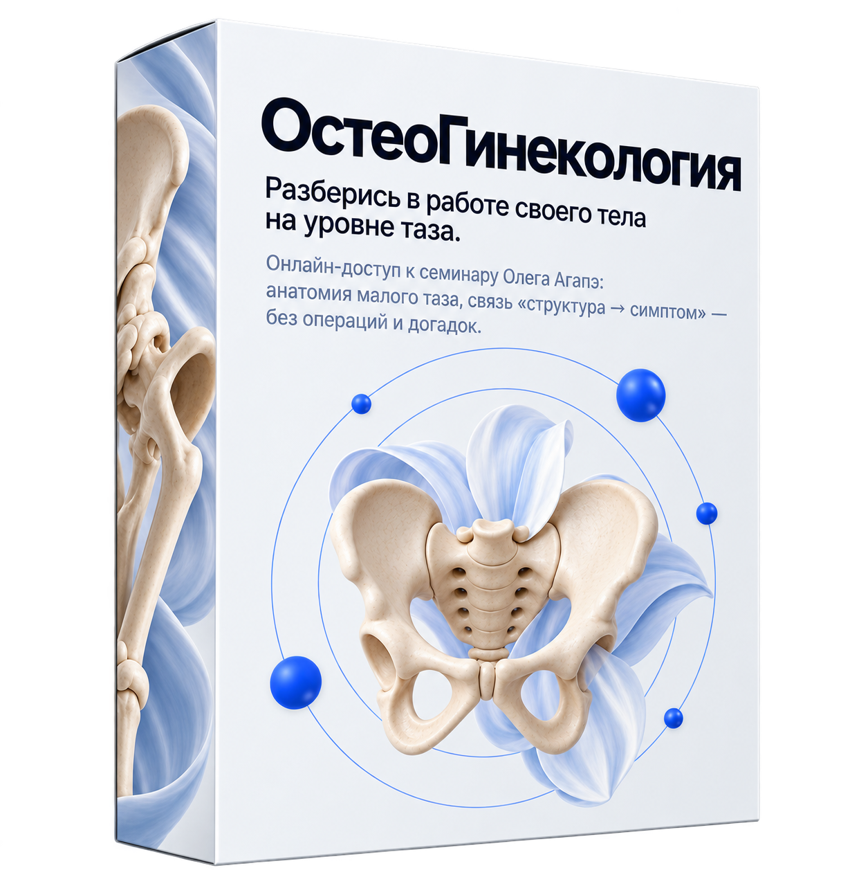
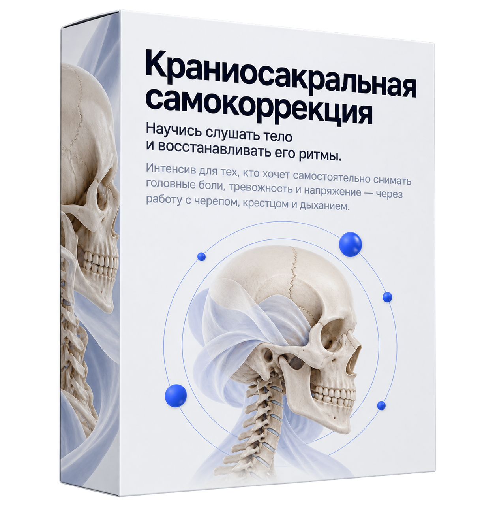
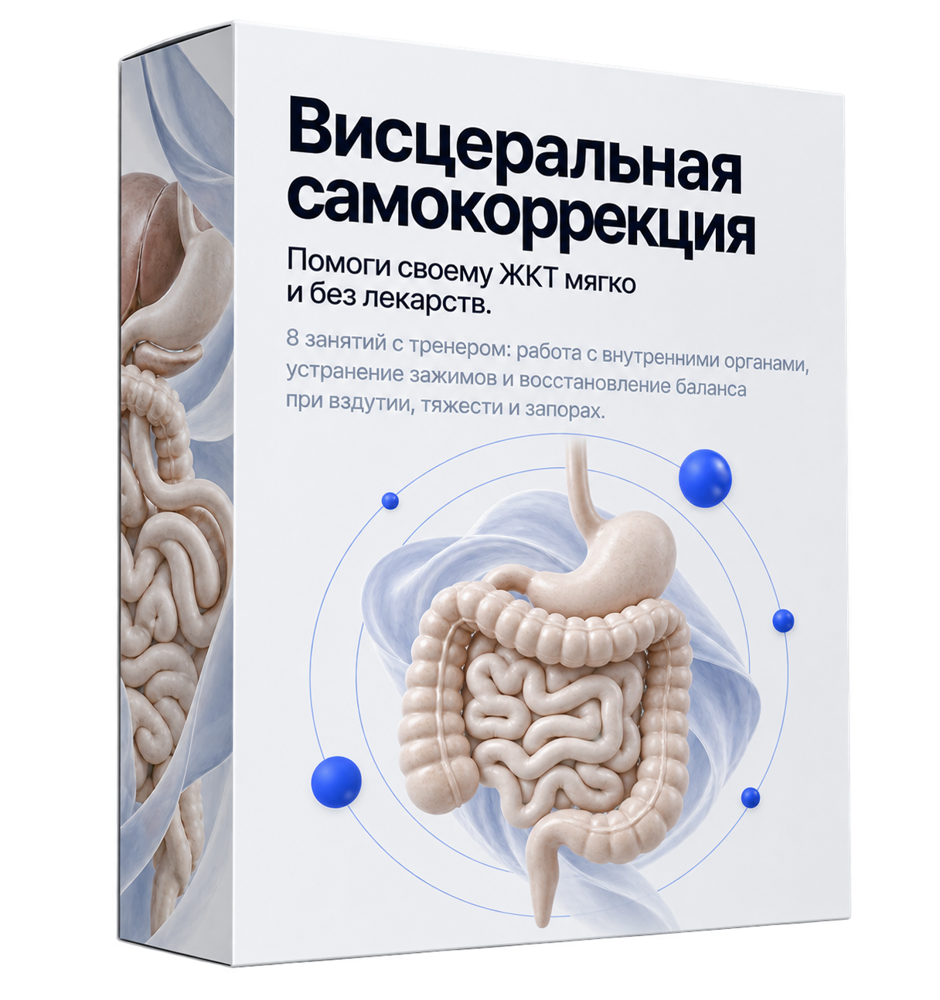

Курсы для себя
Авторские программы Олега Агапэ для тех, кто хочет научиться работать со своим телом самостоятельно — без медицинского образования. Самокоррекция, омоложение, психоэмоциональное здоровье и забота о близких.

учеников
онлайн и офлайн
программ
для себя
преподавания
и практики
Без медицинского образования
техники в формате
«повторяй за мной»
7 программ для работы со своим телом
Каждая программа — самостоятельный онлайн-формат: без медицинского образования, в своём темпе, с поддержкой куратора.

Сам себе остеопат 2.0
Стань для себя лучшим специалистом за месяц.
Самый большой архив остеопатических техник самокоррекции в формате «повторяй за мной»: диафрагмы тела, дыхание, ЖКТ, мышечные цепи — без врачей.
Архив техник самокоррекции на всё тело
8 шагов — от пальпации до гармонизации мышечных цепей
Формат «повторяй за мной» с объяснением автора

ОстеоРодители
Помоги своему ребёнку без таблеток.
15 уроков по 20 минут: адаптированные остеопатические техники для работы с детьми от 0 до 7 лет. Никакого медицинского образования не требуется.
15 коротких уроков по 20 минут
Техники для детей от 0 до 7 лет
Работа со сном, пищеварением, осанкой и тревожностью

ОстеоЭстетика
Выглядеть моложе — без филлеров и операций.
Ежедневные онлайн-тренировки по 25 минут: убираем морщины, отёки и носогубные складки через работу с телом и лицом.
Ежедневные тренировки по 25 минут
Работа с морщинами, отёками и овалом лица
Первые изменения — уже в первую неделю

Психосоматика
Пойми, где в теле живут твои эмоции.
Тариф «Для себя»: пошаговая система самонаблюдения, практики отпускания застрявших эмоций и Zoom-сессия с разбором личного запроса.
Пошаговая система самонаблюдения
Практики отпускания застрявших эмоций
Zoom-сессия с разбором личного запроса

ОстеоГинекология
Разберись в работе своего тела на уровне таза.
Онлайн-доступ к семинару Олега Агапэ: анатомия малого таза, связь «структура → симптом» — без операций и догадок.
Функциональная анатомия малого таза
Связь «структура → симптом» без эзотерики
Запись семинара с доступом на несколько месяцев

МИОТКраниосакральная самокоррекция
Научись слушать тело и восстанавливать его ритмы.
Интенсив для тех, кто хочет самостоятельно снимать головные боли, тревожность и напряжение — через работу с черепом, крестцом и дыханием.
15 видеоуроков + 8 записанных тренировок с преподавателем МИОТ
Работа с ритмом тела, крестцом и дыханием — без специальной подготовки
Доступ к материалам — 3 месяца, поддержка в чате

МИОТВисцеральная самокоррекция
Помоги своему ЖКТ мягко и без лекарств.
8 занятий с тренером: работа с внутренними органами, устранение зажимов и восстановление баланса при вздутии, тяжести и запорах.
8 занятий с тренером в записи
Работа с внутренними органами и мышечными зажимами
Поддержка в чате на протяжении всего курса
Авторская методика, а не набор упражнений из интернета
Формат «повторяй за мной»
Каждая техника показана и объяснена самим Олегом Агапэ — не абстрактная теория, а понятные шаги, которые сразу можно применить к себе.
В своём темпе, из дома
Все программы доступны онлайн: видеоуроки и записанные тренировки открыты нужный срок, поэтому проходить их можно в удобное время, без привязки к расписанию.
Без медицинского образования
Все техники адаптированы для самостоятельного применения: не требуют подготовки, подходят даже тем, кто никогда не занимался телесными практиками.
Олег Агапэ

7 лет преподаёт анатомию и остеопатию, провёл более 20 диссекций за 4 года и обучил свыше 3000 учеников онлайн и офлайн — многие из них замечают первые изменения уже через неделю после начала занятий.
Непрерывно повышает квалификацию в вузах Европы, России, Сингапура и Австралии, а все программы «для себя» строит на той же анатомической базе, что и обучение специалистов — просто в упрощённом, безопасном формате.
Частые вопросы о курсах для себя
Нужно ли медицинское образование?
Нет. Все 7 программ созданы именно «для себя» — техники объясняются простым языком, без медицинской терминологии, и подходят тем, кто никогда не занимался телесными практиками.
Если я не чувствую руками — я справлюсь?
Да. Чувствительность — это навык, который развивается пошагово прямо в процессе занятий, а не обязательное условие для начала.
Онлайн-обучение действительно работает?
Да. У вас будет доступ к видеоурокам, поддержка куратора и чат с ответами на вопросы — этого достаточно, чтобы уверенно применять техники самостоятельно.
Что если я не успею позаниматься по расписанию?
Все уроки и тренировки доступны в записи в течение всего срока курса, поэтому можно проходить программу в своём темпе, в удобное время.
Когда будет заметен первый результат?
Большинство участников замечают первые изменения уже в первую неделю регулярных занятий — устойчивый результат закрепляется на протяжении всего курса.